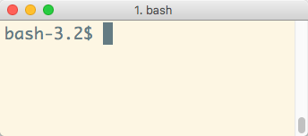
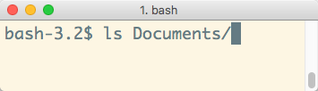
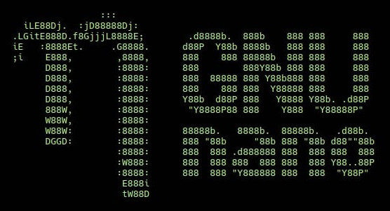

# Command Line Introduction Learn what a command line interface is and learn the basics of navigating and manipulating your filesystem in a Unix shell. This material is part of [architecture & deployment course](https://github.com/MediaComem/comem-archidep) for [Media Engineering](https://heig-vd.ch/formations/bachelor/filieres/ingenierie-des-medias). --- class: center, middle ## A short history of computer interfaces .breadcrumbs[<a href="#1">Command Line Introduction</a>] For old time's sake. --- ### ENIAC (1946) .breadcrumbs[<a href="#1">Command Line Introduction</a> > <a href="#2">A short history of computer interfaces</a>] At that time, there was no such thing as a stored computer program. Programs were **physically hard-coded**. On the [ENIAC][eniac], this was done using function tables with **hundreds of ten-way switches**, which took weeks. <p class='center'><img class='w75' src='images/eniac.jpg' /></p> --- ### Punched cards for computers (1950s) .breadcrumbs[<a href="#1">Command Line Introduction</a> > <a href="#2">A short history of computer interfaces</a>] .grid-60[ Later, many early general-purpose digital computers used [punched cards][punched-card] for data input, output and storage. Someone had to use a [keypunch][keypunch] machine to write your cards, then feed them to the computer. This is what a **program** looked like: <p class='center'><img class='w80' src='images/punched-cards-program.jpg' /></p> ] .grid-40[ <img class='w100' src='images/punched-card.jpg' /> <img class='w100' src='images/keypunch-machine.jpg' /> > Punched cards are much older than computers. > They were first invented around 1725. ] --- ### TeleTYpewriter (1960s) .breadcrumbs[<a href="#1">Command Line Introduction</a> > <a href="#2">A short history of computer interfaces</a>] Teletypewriters (TTYs) became the most popular **computer terminals** in the 1960s. They were basically electromechanical typewriters adapted as a user interface for early [mainframe computers][mainframe]. This is when the first **command line interfaces (CLI)** were created. As you typed commands, a program running on the computer would interpret that input, and the output would be printed on physical paper. <p class='center'><img class='w70' src='images/tty.jpg' /></p> --- ### Video terminals (1970s) .breadcrumbs[<a href="#1">Command Line Introduction</a> > <a href="#2">A short history of computer interfaces</a>] .grid-35[ As available memory increased, **video terminals** such as the [VT100][vt100] replaced TTYs in the 1970s. Initially they only displayed text. Hence they were fundamentally the same as TTYs: textual input/output devices. ] .grid-65[ <p class='center'><img class='w100' src='images/vt102.jpg' /></p> ] --- #### Unix & shells .breadcrumbs[<a href="#1">Command Line Introduction</a> > <a href="#2">A short history of computer interfaces</a> > <a href="#6">Video terminals (1970s)</a>] It's also in this period that the [Unix][unix] operating system was developed. Compared to earlier systems, Unix was the first **portable operating system** because it was written in the [C programming language][c], allowing it to be installed on multiple platforms. Unix is the ancestor of [Linux][linux]. [FreeBSD][freebsd], a Unix-like system, is also used as the basis for [macOS][macos] (since Mac OS X). .grid-60[ In Unix-like systems, The program serving as the **command line interpreter** (handling input/output from the terminal) is called a [**shell**][unix-shell]. > It is called this way because it is the outermost layer around the operating > system; it wraps and hides the lower-level kernel interface). ] .grid-40[ <img class='w100' src='images/shell.png' /> ] --- ### Graphical User Interfaces (1980s) .breadcrumbs[<a href="#1">Command Line Introduction</a> > <a href="#2">A short history of computer interfaces</a>] .grid-40[ Eventually, [graphical user interfaces (GUIs)][gui] were introduced in reaction to the perceived steep learning curve of command line interfaces. They are one of the most common end user computer interface today. > Note that the GUI of a computer is also a shell. It's simply a different way > to interact with the kernel. ] .grid-60[ <img class='w100' src='images/xerox-star.jpg' /> ] --- ### More user interfaces .breadcrumbs[<a href="#1">Command Line Introduction</a> > <a href="#2">A short history of computer interfaces</a>] Today: * [Touch user interface][tui] * [Voice user interface][vui] * [Motion sensing][motion-sensing] * [Augmented][augmented-reality] and [virtual][virtual-reality] reality Tomorrow: * [Brain-computer interface?][brain-interface] --- class: center, middle ## Back to the command line .breadcrumbs[<a href="#1">Command Line Introduction</a>] [Command line interfaces][cli] are still in wide use today. --- ### What is a Command Line Interface (CLI)? .breadcrumbs[<a href="#1">Command Line Introduction</a> > <a href="#10">Back to the command line</a>] A CLI is a tool that allows you to use your computer by **writing** what you want to do (i.e. **commands**), instead of clicking on things. It's been installed on computers for a long time, but it has evolved "a little" since then. It usually looks something like this: <p class='center'><img src='images/cli.jpg' width='100%' /></p> --- ### Why use it? .breadcrumbs[<a href="#1">Command Line Introduction</a> > <a href="#10">Back to the command line</a>] A CLI is not very user-friendly or visually appealing but it has several advantages: * It requires very **few resources** (e.g. memory), which is convenient where resources are scarce (e.g. embedded systems, web servers). * It can be easily **automated** through scripting. * Is is ultimately **more powerful and efficient** than any GUI for many computing tasks. For these reasons, a lot of tools, **especially development tools**, don't have any GUI and are only usable through a CLI. Or they have a limited GUI that does not have as many options as the CLI. **Thus, using a CLI is a requirement for any developer today.** --- ### Open a CLI .breadcrumbs[<a href="#1">Command Line Introduction</a> > <a href="#10">Back to the command line</a>] **CLIs are available on every operating system.** .grid-50[ On **Unix-like** systems _(like macOS or Linux)_, it's an application called the **Terminal**. You can use it right away, as it's the _de-facto_ standard. ] .grid-50[ On **Windows**, the default CLI is called **cmd** (or **Invite de commandes** in French) However, it does not use the same syntax as Unix-like CLIs _(plus, it's bad)_. > **You'll need to install an alternative.** ] .container[ > Software terminals are an emulation of old physical terminals like [TTYs][tty] or the [VT100][vt100]. > You will still find references to the term "TTY" in the documentation of some modern command line tools. ] --- ### Install Git Bash (Windows users only) .breadcrumbs[<a href="#1">Command Line Introduction</a> > <a href="#10">Back to the command line</a>] You're going to install **Git Bash**, a software terminal that emulates the popular [Bourne-again shell (Bash)][bash] on Windows. .grid-30[ <p class='center'><img src='images/gitbashlogo.png' class='w80' /></p> ] .grid-70[ You can download the **Git Bash Installer** on the [Git for Windows website][gitbash]. When it's done, install the software, without changing any default options. Then, search and open the **Git Bash** software. ] .container[ > Installing **Git Bash** will also install **Git** and **Git GUI** _(see the [Git tutorial][slide-git] for more information)_. As an alternative, you may also use the [Windows Subsystem for Linux][windows-subsystem-for-linux], but it sometimes has issues when integrating with other programs not installed in that CLI. ] --- ## How to use the CLI .breadcrumbs[<a href="#1">Command Line Introduction</a>] When you open the CLI you should find a blank screen with something like this: ```bash $> ``` These symbols represent **the prompt** and are used to indicate that you have the lead. **The computer is waiting for you to type something** for it to execute. .grid-70[ The prompt is not always `$>`. For example, by default on macOS, the prompt is `bash-3.2$` (at the time of writing). ] .grid-30[ <p class='center'></p> ] .container[ **For consistency, we will always use `$>` to represent the prompt.** ] ??? Please note that, depending on your OS and your CLI, **the prompt can be composed of different characters**. When the computer's working, the prompt disappear and you won't have the lead until the prompt reappear again. --- ### Writing commands .breadcrumbs[<a href="#1">Command Line Introduction</a> > <a href="#15">How to use the CLI</a>] A command is a **word** that you have to type in the CLI that will **tell the computer what to do**. The syntax for using commands looks like this: ```bash $> name arg1 arg2 arg3 ... ``` Note the use of **spaces** to separate the differents **arguments** of a command. * `name` represents the **command** you want to execute. * `arg1 arg2 arg3 ...` represent the **arguments of the command**, each of them **separated by a space**. --- ### Options vs. arguments .breadcrumbs[<a href="#1">Command Line Introduction</a> > <a href="#15">How to use the CLI</a>] There are two types of arguments to use with a command (if needed): .grid-50[ **Options** usually specify **how** the command will behave. By convention, they are preceded by `-` or `--`: ```bash $> ls `-a` `-l` ``` We use the `ls` command to list the content of the current directory. The options tell `ls` **how** it should do so: * `-a` tells it to print **a**ll elements (including hidden ones). * `-l` tells it to print elements in a **l**ist format, rather than on one line. ] .grid-50[ **Other arguments** not preceded by anything usually specify **what** will be used by the command: ```bash $> cd `/Users/Batman` ``` Here, we use the `cd` command to move to another directory. And the argument `/Users/Batman` tells the command **what** directory we want to move to. ] ??? In the **first example**, we use the `ls` command to list elements in the current directory. We also use options to tell `ls` how it should print elements: * `--all` tells it to print all elements. * `-l` tells it to print elements in a list format, rather than on one line.. --- #### Options with values .breadcrumbs[<a href="#1">Command Line Introduction</a> > <a href="#15">How to use the CLI</a> > <a href="#17">Options vs. arguments</a>] Some options require a **value**: ```bash tar -c -v `-f compressed.tar.gz` file-to-compress ``` `tar` is a command to bundle and compress files. In this example, it takes **three options**: * `-c` tells it to compress (instead of uncompressing). * `-v` tells it to be verbose (print more information to the CLI). * `-f` tells it where to store the compressed file; this is followed **immediately** by `compressed.tar.gz` which is the **value** of that option. It then takes **one argument**: * `file-to-compress` is the file (or directory) to compress --- ### Naming things when using CLI .breadcrumbs[<a href="#1">Command Line Introduction</a> > <a href="#15">How to use the CLI</a>] You should avoid the following characters in directories and file names you want to manipulate with the CLI: * **spaces** _(they're used to separate arguments in command)_. * **accents** (e.g. `é`, `à`, `ç`, etc). They can cause **errors** in some scripts or tools, and will inevitably complicate using the CLI. If you have a `Why So Serious` directory, this **WILL NOT work**: ```bash $> ls `Why` `So` `Serious` ``` This command will be interpreted as a call to the `ls` command with **three arguments**: `Why`, `So` and `Serious`. You **can** use arguments containing spaces, but you have to **escape** them first, either with **quotation marks** or **backslashes**: .grid-50[ ```bash $> ls `"Why So Serious"` ``` ] .grid-50[ ```bash $> ls `Why\ So\ Serious` ``` ] --- ### Auto-completion .breadcrumbs[<a href="#1">Command Line Introduction</a> > <a href="#15">How to use the CLI</a>] It's not fun to type directory names, especially when they have spaces you must escape in them, so the CLI has **auto-completion**. Type the first few characters of the file or directory you need, then hit the `Tab` key: .grid-50[ <img src='images/auto-complete.png' width='100%' /> ] .grid-50[  ] .container[ If there are multiple files or directories that begin with the **same characters**, pressing `Tab` will not display anything. You need hit `Tab` **a second time** to display the list of available choices: <p class='center'><img src='images/auto-complete-multiple.png' width='50%' /></p> You can type just enough characters so that the CLI can determine which one you want (in this case `c` or `w`), then hit `Tab` again to get the full path. ] --- ### Getting help .breadcrumbs[<a href="#1">Command Line Introduction</a> > <a href="#15">How to use the CLI</a>] You can get help on most advanced commands by executing them with the `--help` option. As the option's name implies, it's designed to **give you some help** on how to use the command: ```bash tar --help ``` Some commands don't respond to the `--help` option. To try and get help, depending on what operating system you're on: * On Linux or macOS, use `man ls` to display the **manual** for the `ls` command. * On Windows, use `help cd` to display help for the `cd` command; you can also type `help` to list available commands (only system commands). <p class='center'><img src='images/tar-help.png' width='70%' /></p> --- #### Interactive help pages .breadcrumbs[<a href="#1">Command Line Introduction</a> > <a href="#15">How to use the CLI</a> > <a href="#21">Getting help</a>] Some help pages or commands will take over the screen to display their content, hiding the prompt and previous interactions. Usually, it means that there is content that takes more than one screen to be shown. You can "scroll" up and down line-by-line using the arrow keys or the `Enter` key. To quit these interactive documentations, use the `q` (**q**uit) key. <p class='center'><img src='images/interactive-help.png' width='80%' /></p> --- #### Unix Command Syntax .breadcrumbs[<a href="#1">Command Line Introduction</a> > <a href="#15">How to use the CLI</a> > <a href="#21">Getting help</a>] When reading a command's manual or documentation, you may find some strange syntax that make little sense to you, like: ```bash cd [-L|[-P [-e]] [-@]] [dir] ls [-ABCFGHLOPRSTUW@abcdefghiklmnopqrstuwx1] [file ...] ``` Here are some explanations: * `[]`: Whatever's inside is **optionnal** (ex: `[-e]`). * `|`: You have to **chose between** options (ex: `-L|-P`). * `...`: Whatever's before can be **repeated** (ex: `[file ...]`). Depending on the documentation, you will also see symbols like this: * `<value>` * `--option=VALUE` **DON'T WRITE `<value>` or `VALUE`**. Replace it by an appropriate value for that option or argument. --- class: center, middle ## Using the filesystem .breadcrumbs[<a href="#1">Command Line Introduction</a>] --- ### The `pwd` command .breadcrumbs[<a href="#1">Command Line Introduction</a> > <a href="#24">Using the filesystem</a>] When you open a CLI, it places you in your **home directory**. From there you can navigate your filesystem to go to other directories _(more on that later)_. But first, you might want to check **where** you currently are. Use the `pwd` command: ```bash $> pwd /Users/Batman ``` > `pwd` means "print working directory": it gives you the absolute path to the directory you're currently in. --- ### The `ls` command .breadcrumbs[<a href="#1">Command Line Introduction</a> > <a href="#24">Using the filesystem</a>] Now that you know where you are, you might want to know **what your current directory is containing**. Use the `ls` command: ```bash $> ls (lots and lots of files) ``` > `ls` means "list": it lists the contents of a directory. By default, `ls` doesn't list **hidden elements**. By convention in Unix-like systems, files that start with `.` (a dot) are hidden. If you want it to do that, you need to pass the `-a` (**a**ll) option: ```bash $> ls -a (lots and lots of files, including the hidden ones) ``` --- ### The `cd` command .breadcrumbs[<a href="#1">Command Line Introduction</a> > <a href="#24">Using the filesystem</a>] It's time to go out a little and move to another directory. Suppose you have a `Documents` directory in your home directory, that contains another directory `TopSecret` where you want to go. Use the `cd` command, passing it as argument **the path to the directory** you want to go to: ```bash $> pwd /Users/Batman $> cd Documents/TopSecret ``` This is a **relative path**: it is relative to the current working directory. You can also go to a specific directory anywhere on your filesystem like this: ```bash $> cd /Users/Batman/Documents ``` This is an **absolute path** because it starts with a `/` character. It starts at the root of your filesystem so it does not matter where you are now. > You also have **auto-completion** with the `cd` command. Hit the `Tab` key after entering some letters. --- #### The `.` path .breadcrumbs[<a href="#1">Command Line Introduction</a> > <a href="#24">Using the filesystem</a> > <a href="#27">The `cd` command</a>] The `.` path represents the current directory. The following sequences of commands are strictly equivalent: .grid-50[ ```bash $> pwd /Users/Batman $> cd Documents/TopSecret ``` ] .grid-50[ ```bash $> pwd /Users/Batman $> cd ./Documents/TopSecret ``` ] .container[ You can also *not go anywhere*: ```bash $> pwd /Users/Batman $> `cd .` $> pwd /Users/Batman ``` Or compress the current directory: ```bash tar -c -v -f /somewhere/compressed.tar.gz `.` ``` This does not seem very useful now, but it will be in further tutorials. ] --- #### The `..` path .breadcrumbs[<a href="#1">Command Line Introduction</a> > <a href="#24">Using the filesystem</a> > <a href="#27">The `cd` command</a>] To go up into the parent directory, use the `..` path (**don't forget the space between `cd` and `..`**): ```bash $> pwd /Users/Batman/Documents $> `cd ..` $> pwd /Users/Batman ``` You can also drag and drop a directory from your Explorer or your Finder to the CLI to see its absolute path automaticaly written: ```bash $> cd (Drag and drop a directory from your Explorer/Finder, and...) $> cd /Users/Batman/Pictures/ ``` At anytime and from anywhere, you can return to your **home directory** with the `cd` command, without any argument or with a `~` (tilde): .grid-50[ ```bash $> cd $> pwd /Users/Batman ``` ] .grid-50[ ```bash $> cd ~ $> pwd /Users/Batman ``` ] ??? > To type the `~` character, use this combination: > * `AltGr-^` on **Windows** > * `Alt-N` on **Mac** --- #### Path reference .breadcrumbs[<a href="#1">Command Line Introduction</a> > <a href="#24">Using the filesystem</a> > <a href="#27">The `cd` command</a>] Path | Where :---------- | :---------------------------------------------------------------------------------------------------------------- `.` | The current directory. `..` | The parent directory. `foo/bar` | The file/directory `bar` inside the directory `foo` in the current directory. This is a **relative path**. `./foo/bar` | *Same as the above* `/foo/bar` | The file/directory `bar` inside the directory `foo` at the root of your filesystem. This is an **absolute path**. `~` | Your home directory. This is an **absolute path**. `~/foo/bar` | The file/directory `bar` inside the directory `foo` in your home directory. This is an **absolute path**. --- #### Your projects directory .breadcrumbs[<a href="#1">Command Line Introduction</a> > <a href="#24">Using the filesystem</a> > <a href="#27">The `cd` command</a>] Throughout this course, you will often see the following command (_or something resembling it_): ```bash $> cd `/path/to/projects` ``` This means that you use **the path to the directory in which you store your projects**. For example, on John Doe's macOS system, it could be `/Users/jdoe/Projects`. > Do not actually write `/path/to/projects`. It will obviously fail, unless you > happen to have a `path` directory that contains a `to` directory that contains > a `projects` directory... **WARNING:** if your Windows/Linux/macOS username contains **spaces** or **accents**, you should **NOT** store your projects under your home directory. You should find a path elsewhere on your filesystem. This will save you **a lot of needless pain and suffering**. --- ### The `mkdir` command .breadcrumbs[<a href="#1">Command Line Introduction</a> > <a href="#24">Using the filesystem</a>] You can create directories with the CLI. Use the `mkdir` (**m**a**k**e **dir**ectory) command to create a new directory in the current directory: ```bash $> mkdir BatmobileSchematics ``` You can also create a directory elsewhere: ```bash $> mkdir ~/Documents/TopSecret/BatmobileSchematics ``` This will only work if all directories down to `TopSecret` already exist. To automatically create all intermediate directories, add the `-p` option: ```bash $> mkdir -p ~/Documents/TopSecret/BatmobileSchematics ``` --- ### The `touch` command .breadcrumbs[<a href="#1">Command Line Introduction</a> > <a href="#24">Using the filesystem</a>] The `touch` command updates the last modification date of a file. It also has the useful property of creating the file if it doesn't exist. Hence, it's a **quick way to create an empty file** in the CLI: ```bash $> touch foo.txt $> ls foo.txt ``` --- ### The `echo` command .breadcrumbs[<a href="#1">Command Line Introduction</a> > <a href="#24">Using the filesystem</a>] The `echo` command simply **echo**es its arguments back to you: ```bash $> echo Hello World Hello World ``` This seems useless, but can be quite powerful when combined with Unix features like [redirection][redirection]. For example, you can **redirect the output to a file**. The `>` operator means *"**write** the output of the previous command into a file"*. This allows you to quickly create a simple text file: ```bash $> echo foo `>` bar.txt $> ls bar.txt ``` If the file already exists, it is overwritten. You can also use the `>>` operator, which means *"**append** the output of the previous command to the end of a file"*: ```bash $> echo bar `>>` bar.txt ``` --- ### The `cat` command .breadcrumbs[<a href="#1">Command Line Introduction</a> > <a href="#24">Using the filesystem</a>] The `cat` command can display one file or con**cat**enate multiple files in the CLI. For example, this displays the contents of the previous example's file: ```bash $> cat bar.txt foo bar ``` This creates a new `hello.txt` file and displays the result of concatenating the two files: ```bash $> echo World > hello.txt $> cat bar.txt hello.txt foo bar World ``` --- ### Stopping running commands .breadcrumbs[<a href="#1">Command Line Introduction</a> > <a href="#24">Using the filesystem</a>] Sometimes a command will take too long to execute. As an example, run this command which will wait one hour before exiting: ```bash $> sleep 3600 ``` As you can see, the command keeps executing and you **no longer have a prompt**. Anything you type is ignored, as it is no longer interpreted by the shell, but by the `sleep` command instead (which doesn't do anything with it). By convention in Unix shells, you can always terminate a running command by typing `Ctrl-C`. > Note that `Ctrl-C` **forces termination** of a running command. > It might not have finished what it was doing. --- ### Windows users .breadcrumbs[<a href="#1">Command Line Introduction</a> > <a href="#24">Using the filesystem</a>] This is how you reference or use your **drives** (`C:`, `D:`, etc) in Git Bash on Windows: ```bash $> cd /c/foo/bar $> cd /d/foo ``` (In the Windows Subsystem for Linux, it's `/mnt/c` instead of `/c`.) **Copy/Paste** Since `Ctrl-C` is used to stop the current process, it **can't** be used as a shortcut to copy things from the CLI. Instead, Git Bash has two custom shortcuts: * `Ctrl-Insert` to **copy** things from the CLI * `Shift-Insert` to **paste** things to the CLI > You can also use **Right-click > Paste** if you don't have an `Insert` key. --- class: center, middle ## Vim .breadcrumbs[<a href="#1">Command Line Introduction</a>] > [**Vim**][vim] is an infamous CLI editor originally developed in 1976 (WHAT?!) > for the Unix operating system. --- ### WHY?! .breadcrumbs[<a href="#1">Command Line Introduction</a> > <a href="#38">Vim</a>] Why would you need to learn it? Sometimes it's just the **only editor you have** (e.g. on a server). Also **some developer tools might open vim** for user input. If this happens (_and it will_), there's **one** imperative rule to follow: **DO NOT PANIC!** Open a file by running the `vim` command with the path to the file you want to create/edit: ```bash vim test.txt ``` --- ### How vim works .breadcrumbs[<a href="#1">Command Line Introduction</a> > <a href="#38">Vim</a>] Vim can be unsettling at first, until you know how it works. *Let go of your mouse*, it's mostly useless in Vim. You control Vim by **typing**. The first thing to understand whith Vim is that it has *3 modes*: * **Normal** mode (the one you're in when Vim starts). * **Command** mode (the one to use to save or quit). * **Insert** mode (the one to use to insert text). To go into each mode use this keys : | From | Type | To go to | | :------------- | :------ | :---- | | Normal | `:` | Command | | Normal | `i` | Insert | | Command/Insert | `Esc` | Normal | --- ### Normal mode .breadcrumbs[<a href="#1">Command Line Introduction</a> > <a href="#38">Vim</a>] The **Normal** mode of Vim is the one you're in when it starts. In this mode, you can move the cursor around with the arrow keys. You can also use some commands to interact with the text: | Command | Effect | | :------ | :--------------------------------------------------------------- | | `:` | Enter **Command** mode (to save and/or quit) | | `i` | Enter **Insert** mode (to type text) | | `x` | Delete the character under the cursor | | `dw` | Delete a word, with the cursor standing before the first letter | | `dd` | Delete the complete line the cursor is on | | `u` | Undo the last command | > At anytime, you can hit the `Esc` key to go back to the **Normal** mode. --- ### Command mode .breadcrumbs[<a href="#1">Command Line Introduction</a> > <a href="#38">Vim</a>] The **Command** mode, which you can only access from the **Normal** mode, is the one you'll mostly use to save and/or quit. To enter the **Command** mode, hit the `:` key. From there, you can use some commands: | Command | Effect | | :---------- | :--------------------------------------------------------- | | `q` | **Q**uit Vim (will fail if you have unsaved modifications) | | `w` | **W**rite (save) the file and all its modifications | | `q!` | Force Vim to quit (any unsaved modification will be lost) | | `wq` or `x` | **W**rite and **q**uit, i.e. save the file then quit Vim. | <!-- TODO: add link http://www.openvim.com/ --> --- class: center, middle, image-header ## Nano .breadcrumbs[<a href="#1">Command Line Introduction</a>]  > Nano: a simpler CLI editor to keep your sanity. --- ### An alternative to Vim .breadcrumbs[<a href="#1">Command Line Introduction</a> > <a href="#43">Nano</a>] If vim is a bit too much for you, [Nano][nano] is another CLI editor that is much simpler to use and is also usually installed on most Unix-like systems (and in Git Bash). You can open a file with Nano in much the same way as vim, using the `nano` command instead: ```bash $> nano test.txt ``` --- ### Editing files with Nano .breadcrumbs[<a href="#1">Command Line Introduction</a> > <a href="#43">Nano</a>] Editing files is much more straightforward and intuitive with Nano. Once the file is open, you can simply type your text and move around with arrow keys: <p class='center'><img src='images/nano.png' class='p80' /></p> > Nano also helpfully prints its main keyboard shortcuts at the bottom of the > window. The most important one is `^X` for Exit. In keyboard shortcut > parlance, the `^` symbol always represents the control key. So, **to exit from Nano, type `Ctrl-X`**. --- #### Saving files .breadcrumbs[<a href="#1">Command Line Introduction</a> > <a href="#43">Nano</a> > <a href="#45">Editing files with Nano</a>] When you exit Nano with `Ctrl-X`, it will ask you whether you want to save your changes: <p class='center'><img src='images/nano-save.png' class='p80' /></p> Press the `y` key to save or the `n` key to discard your changes. --- #### Confirming the filename .breadcrumbs[<a href="#1">Command Line Introduction</a> > <a href="#43">Nano</a> > <a href="#45">Editing files with Nano</a>] When saving changes, Nano will always ask you to **confirm the filename** where the changes should be saved: <p class='center'><img src='images/nano-filename.png' class='p80' /></p> As you can see, it tells you the name of the file you opened. Now you can: * Simply **press `Enter`** to save the file. * Or, change the name to save your changes to another file (and keep the unmodified original). --- ### Setting Nano as the default editor .breadcrumbs[<a href="#1">Command Line Introduction</a> > <a href="#43">Nano</a>] On a standard Bash shell (which the default terminal shell on macOS and in Git Bash), you have to set the `$EDITOR` environment variable. You can do that by adding the following line to your `~/.bash_profile`: ``` export EDITOR=nano ``` Remember that you must relaunch your terminal for this change to take effect. > **Hint:** now that you know how to use Nano, you can edit your Bash profile > file with the following command: `nano ~/.bash_profile`. On Ubuntu, you can list available editors and choose the default one with the following command: ```bash $> sudo update-alternatives --config editor ``` --- ## The `PATH` variable .breadcrumbs[<a href="#1">Command Line Introduction</a>] When you type a command in the CLI, it will try to see **if it knows this command** by looking in some directories to see if there is an **executable file that matches the command name**. ```bash $> rubbish bash: rubbish: command not found ``` > This means that the CLI failed to found the executable named `rubbish` in any of the directories where it looked. The list of the directories (and their paths) in which the CLI searches is stored in the `PATH` environment variable, each of them being separated with a `:`. You can print the content of your `PATH` variable to see this list: ```bash $> echo $PATH /usr/local/bin:/bin:/usr/bin:/custom/dir ``` --- ### Understanding the `PATH` .breadcrumbs[<a href="#1">Command Line Introduction</a> > <a href="#49">The `PATH` variable</a>] Assuming your `PATH` looks like this: ```bash $> echo $PATH /usr/local/bin:/bin:/usr/bin:/custom/dir ``` What happens when you run the following command? ```bash $> ls -a -l ``` 1. The shell will look in the `/usr/local/bin` directory. *There is no executable named `ls` there, moving on...* 2. The shell will look in the `/bin` directory. **There is an executable named `ls` there!** Execute it with arguments `-a` and `-l`. 3. We're done here. No need to look at the rest of the `PATH`. If there happens to be an `ls` executable in the `/custom/dir` directory, it will **not be used**. You can check where a command is with the `which` command: ```bash $> which ls /bin/ls ``` --- ### Using non-system commands .breadcrumbs[<a href="#1">Command Line Introduction</a> > <a href="#49">The `PATH` variable</a>] Many development tools you install come with executables that you can run from the CLI (e.g. Git, Node.js, MongoDB). Some of these tools will install their executable in a **standard directory** like `/usr/local/bin`, which is already in your `PATH`. Once you've installed them, you can simply run their new commands. Git and Node.js, for example, do this. However, sometimes you're downloading only an executable and saving it in a directory somewhere that is **not in the `PATH`**. --- #### Custom command example .breadcrumbs[<a href="#1">Command Line Introduction</a> > <a href="#49">The `PATH` variable</a> > <a href="#51">Using non-system commands</a>] Run the following commands to download a simple Hello World shell script and make it into an executable: ```bash $> mkdir -p ~/hello-program/bin $> curl -o ~/hello-program/bin/hello https://gist.githubusercontent.com/AlphaHydrae/8e09bf8790cbd6e3c7d9974988da3c28/raw/74372a1be35e973897c0a1fc946f3d18012a860c/hello.sh $> chmod 755 ~/hello-program/bin/hello ``` You should now be able to find it in the `~/hello-program/bin` directory: ```bash $> ls ~/hello-program/bin hello ``` It's now installed, we can find it using the CLI, but it still cannot be run. Why? ```bash $> hello command not found: hello ``` --- #### Executing a command in a directory that's not in the `PATH` .breadcrumbs[<a href="#1">Command Line Introduction</a> > <a href="#49">The `PATH` variable</a> > <a href="#51">Using non-system commands</a>] You can run a command from anywhere by writing **the absolute path to the executable**: ```bash $> ~/hello-program/bin/hello Hello World ``` You can also **manually go to the directory** containing the executable and **run the command there**: ```bash $> cd ~/hello-program/bin $> ./hello Hello World ``` > When the first word on the CLI starts with `/`, `~/`, `./` or `../`, the shell interprets it as a file path. > Instead of looking for a command in the `PATH`, it simply executes that file. But, ideally, you want to be able to **just type `hello`**, and have the script be executed. For this, you need to **add the directory containing the executable** to your `PATH` variable. --- ### Updating the `PATH` variable .breadcrumbs[<a href="#1">Command Line Introduction</a> > <a href="#49">The `PATH` variable</a>] To add a new path in your `PATH` variable, you have to edit a special file, used by your CLI interpreter (shell). This file depends upon the shell you are using: | CLI | File to edit | | :------------------ | :----------- | | Terminal / Git Bash | `~/.bash_profile` | | [ZSH][zsh-site] | `~/.zshrc` | Open the adequate file (`.bashrc` for this example) from the CLI with `nano` or your favorite editor if it can display hidden files: ```bash $> nano ~/.bash_profile ``` Add this line at the bottom of your file (use `i` to enter _insert_ mode if you're in Vim): ```vim export PATH="~/hello-program/bin:$PATH" ``` If you're in Vim, press `Esc` when you're done typing, then `:wq` and `Enter` to save and quit. --- #### Does it work? .breadcrumbs[<a href="#1">Command Line Introduction</a> > <a href="#49">The `PATH` variable</a> > <a href="#54">Updating the `PATH` variable</a>] > Remember to **close and re-open your CLI** to have the shell reload its configuration file. You should now be able to run the Hello World shell script as a command simply by typing `hello`: ```bash $> hello Hello World ``` You don't even have to be in the correct directory: ```bash $> cd $> pwd /Users/jdoe $> hello Hello World ``` And your CLI knows where it is: ```bash $> which hello /Users/jdoe/hello-program/bin/hello ``` --- #### What have I done? .breadcrumbs[<a href="#1">Command Line Introduction</a> > <a href="#49">The `PATH` variable</a> > <a href="#54">Updating the `PATH` variable</a>] You have **added a directory to the `PATH`**: ```vim export PATH="~/hello-program/bin:$PATH" ``` This line says: * Modify the `PATH` variable. * In it, put the new directory `~/hello-program/bin` and the previous value of the `PATH`, separated by `:`. The next time you run a command, your shell will **first look** in this directory for executables, then in the **rest of the `PATH`**. **Common mistakes** * What you must put in the `PATH` is **NOT** the path to the executable, but the path to the **directory containing the executable**. * You must re-open your CLI for the change to take effect: the shell configuration file (e.g. `~/.bash_profile`) is only applied when the shell starts. [augmented-reality]: https://en.wikipedia.org/wiki/Augmented_reality [bash]: https://en.wikipedia.org/wiki/Bash_(Unix_shell) [brain-interface]: https://en.wikipedia.org/wiki/Brain–computer_interface [c]: https://en.wikipedia.org/wiki/C_(programming_language) [cat]: https://en.wikipedia.org/wiki/Cat_(Unix) [cli]: https://en.wikipedia.org/wiki/Command-line_interface [eniac]: https://en.wikipedia.org/wiki/ENIAC [freebsd]: https://en.wikipedia.org/wiki/FreeBSD [gitbash]: https://gitforwindows.org [gui]: https://en.wikipedia.org/wiki/Graphical_user_interface [keypunch]: https://en.wikipedia.org/wiki/Keypunch [linux]: https://en.wikipedia.org/wiki/Linux [macos]: https://en.wikipedia.org/wiki/MacOS [mainframe]: https://en.wikipedia.org/wiki/Mainframe_computer [motion-sensing]: https://en.wikipedia.org/wiki/Motion_detection [nano]: https://en.wikipedia.org/wiki/GNU_nano [punched-card]: https://en.wikipedia.org/wiki/Punched_card [redirection]: https://en.wikipedia.org/wiki/Redirection_(computing) [slide-git]: ../git [tty]: https://en.wikipedia.org/wiki/Teleprinter [tui]: https://en.wikipedia.org/wiki/Touch_user_interface [unix]: https://en.wikipedia.org/wiki/Unix [unix-shell]: https://en.wikipedia.org/wiki/Unix_shell [vim]: https://en.wikipedia.org/wiki/Vim_(text_editor) [virtual-reality]: https://en.wikipedia.org/wiki/Virtual_reality [vt100]: https://en.wikipedia.org/wiki/VT100 [vui]: https://en.wikipedia.org/wiki/Voice_user_interface [windows-subsystem-for-linux]: https://docs.microsoft.com/en-us/windows/wsl/about [zsh-site]: http://zsh.sourceforge.net/